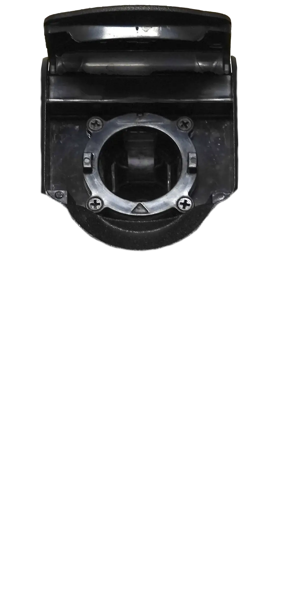
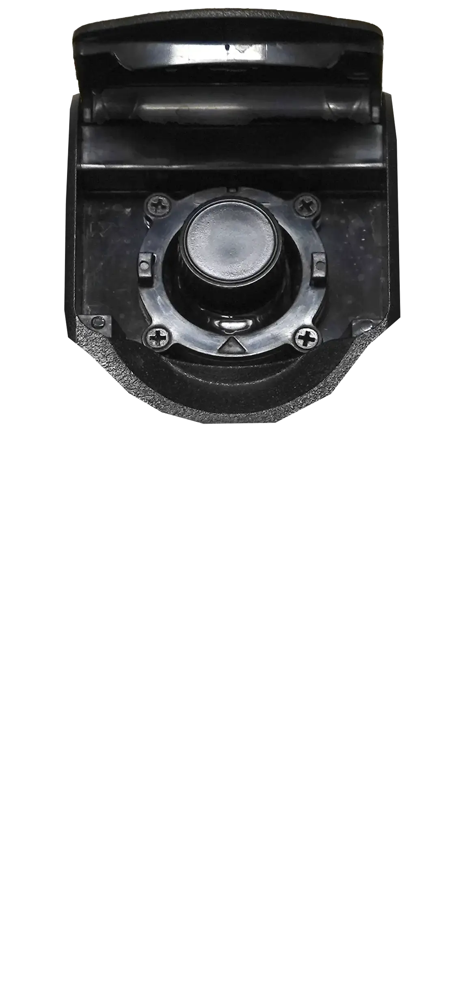
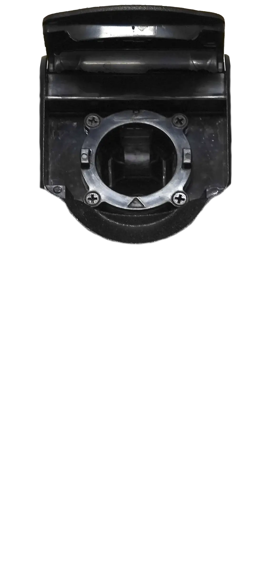
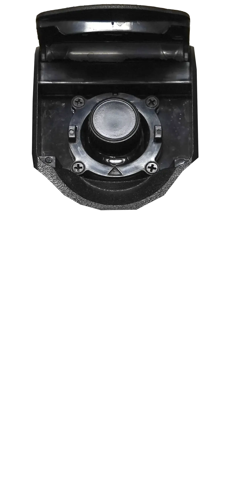

Turbidity Estimation from Images (FNU)
Just click on the top of the turbidimeter, and select all of your images (crtl or shift click). Then just wait for the images to process, and a link to download the CSV file will appear when done.
0%
Downloading model...
Please wait